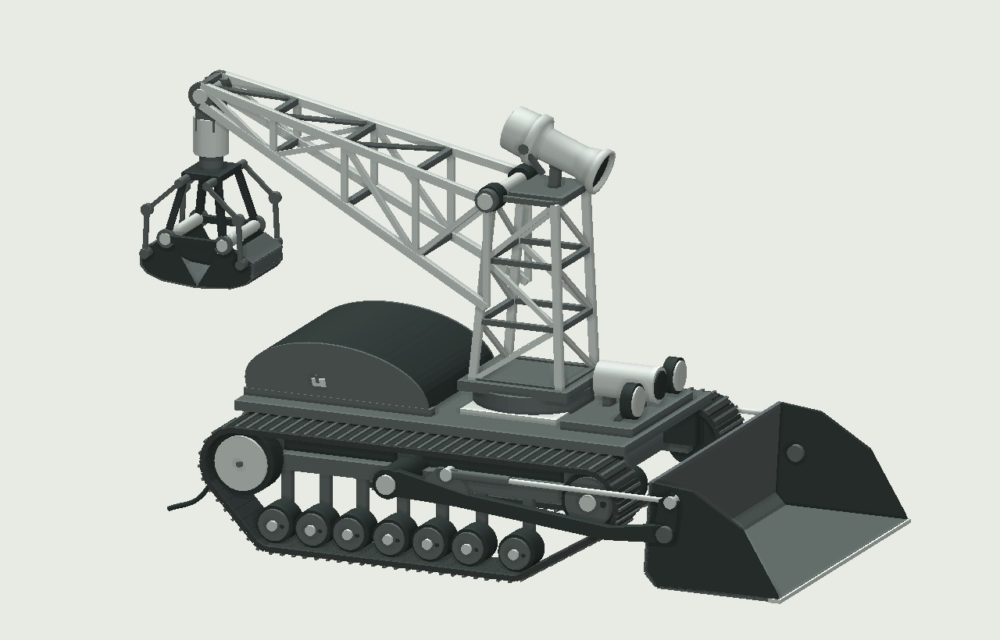

Техническое описание
Полиуретановые траки, грейфер, две степени подвижности погрузчика и две телекамеры.
Мобильный робот с решётчатой стрелой, грейфером и фронтальным погрузчиком.


Видны нижний ряд колёс, открытая стрела и боковой рычаг погрузчика.

Ракурс раскрывает ширину фермы и форму рамки над челюстями.
В. В. Овчинников, А. Ф. Батанов, С. Г. Мингалеев. «Роботы в Чернобыле». Технологии гражданской безопасности, 2019, № 4 (62). Положение модели подобрано по фотографии приблизительно.
Полиуретановые траки, грейфер, две степени подвижности погрузчика и две телекамеры.
Очертания кожуха, решётчатые боковины стрелы, нижний ряд дисков и форма ковша.
Размеры, скрытые связи, оси и диапазоны движений. Заводские чертежи и обмеры отсутствуют.